Step 1 of the Android phone's Samsung TV guide, drawn three ways. The owner holds a basic Samsung remote with real number keys and no 123 button; today's step 1 is written only for the Smart Remote. He picked step 1 asks which remote you have. This is how that question, and the two instructions it leads to, could look. The recommended direction is first.
The drawings carry the decision, so they are one geometry each, used at every size — the remote the viewer taps and the remote they are then shown are the same object, re-scaled. Three things about them are deliberate:
123 above four
coloured dots, in one pill — because Samsung labels it 123 on an older Smart
Remote and prints coloured dots on a newer one, and the instruction names both.The question is the screen's headline and the two drawn remotes are two tall cards side by side. After the tap the same drawing, bigger, is the step's illustration with the keys to press lit. The switch is the guide's own quiet link.
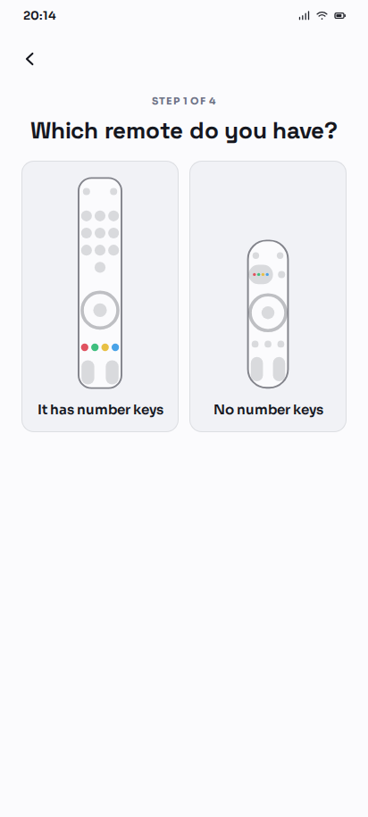
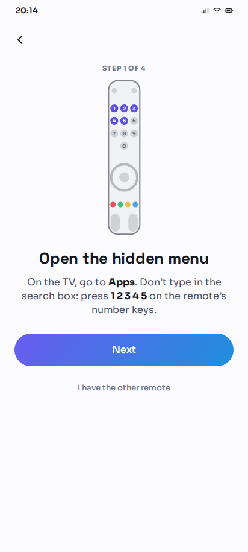
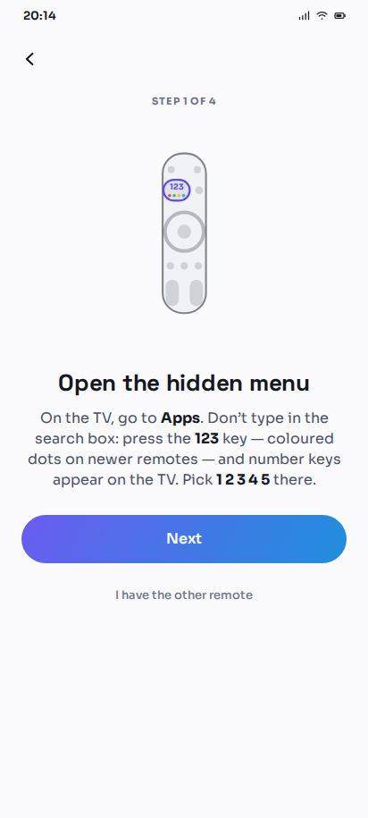
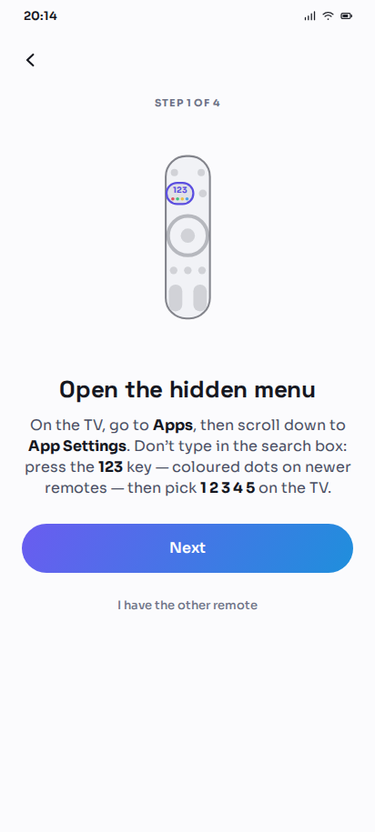
What it gives: the silhouette is the biggest thing on the question
screen and it is the same object on the instruction, so a viewer who chose wrongly sees it at
once. The keypad's digits are readable, so the picture and the sentence say the same thing.
What it costs: step 1's illustration slot grows from 220 × 150 dp to
220 × 260 dp — on this step only — and at the 200 % font setting the pair stacks into one column
with the drawing beside the label, which is direction B's row shape.
The question is the headline and the choices are two full-width rows, a small drawing at the left and one line saying what that remote is. The instruction's illustration is not the remote but the keys, cropped into the shipped 220 × 150 dp slot at four times A's size.
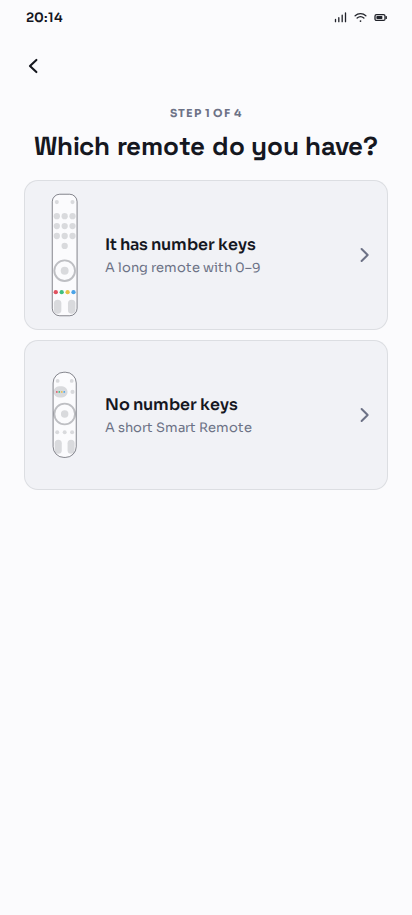
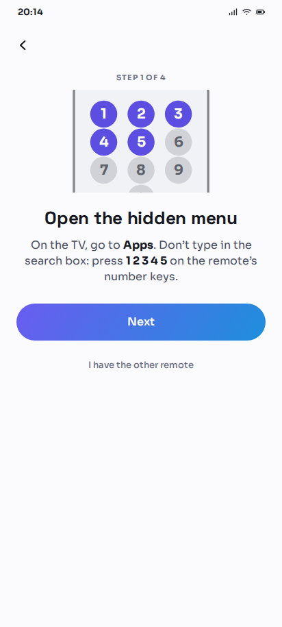
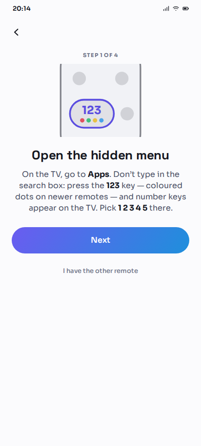
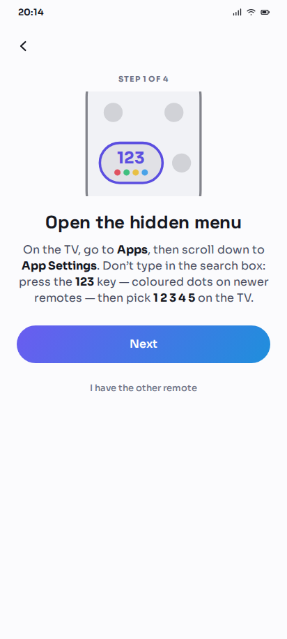
What it gives: the keys to press are unmistakable, and the shipped
illustration slot is untouched. The rows carry a second line, so the choice is named twice — once
by shape and once in words.
What it costs: the silhouette that identified the remote on the question
screen is gone from the instruction, so a wrong choice has less to notice it by; the row
thumbnails are small enough that only long-against-short survives in them; and it needs two extra
strings.
The smallest change to the shipped screen. Step 1 keeps its own title on every state and the question is a prompt line under it; the drawings stay at the shipped 220 × 150 dp. After the tap the choice does not disappear — it becomes a two-tab control under the step indicator, which is both where the viewer sees what they chose and how they switch, so no quiet link is needed.
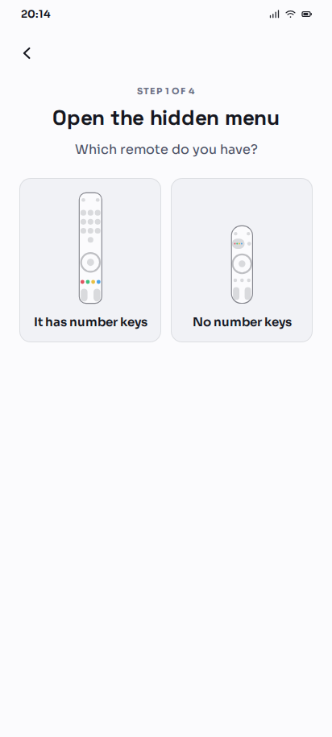
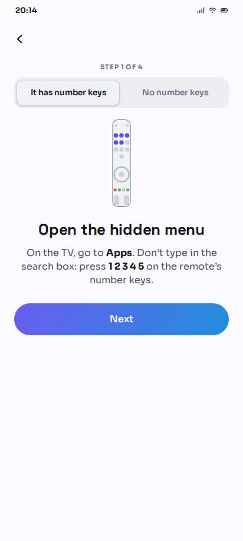
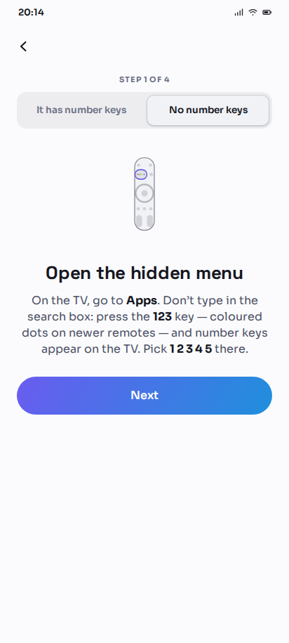
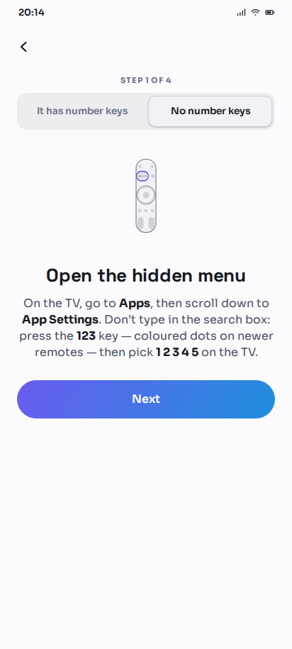
What it gives: continuity — the step is never not itself — one
affordance instead of two, and no change to the illustration slot.
What it costs: a tab bar is the most prominent thing on a screen whose
one action is Next; the drawings are the smallest of the three, and at 220 × 150 the
Number/Color key is a speck, so its marking is carried by the body text alone.
| A — Two remotes | B — Keys up close | C — Remote tabs | |
|---|---|---|---|
| The question's place | Replaces the illustration and body; the question is the H1 | Replaces them; the question is the H1 | Step title stays; the question is a prompt line |
| Choice layout | Two tall cards, side by side | Two full-width rows | Two cards, side by side, shipped drawing size |
| The switch | Quiet link, I have the other remote | Quiet link | Two-tab control, always on screen |
| Instruction art | The whole remote, 220 × 260 | A crop of the keys, 220 × 150 | The whole remote, 220 × 150 |
| New components | The two-remote choice | The choice rows + the detail crop | The two-remote choice + a segmented control |
| New strings beyond FR-13 | None | Two (the rows' second lines) | None |
| At 200 % font | Stacks to one column, drawing beside label | Rows already stack | Tab labels wrap inside the tabs |
Four states, in English light; then dark, Danish, Faroese, the 200 % font setting and Faroese at
200 %. A -tall frame renders the whole screen rather than the 915 dp above the fold.
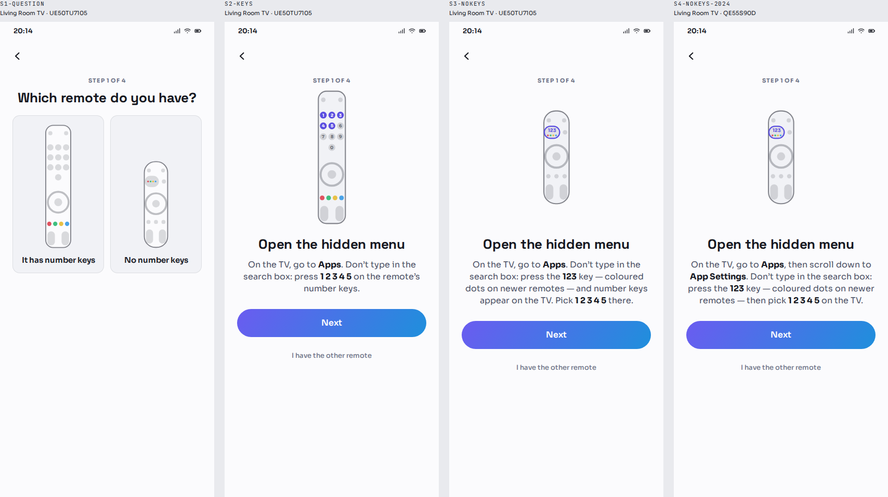
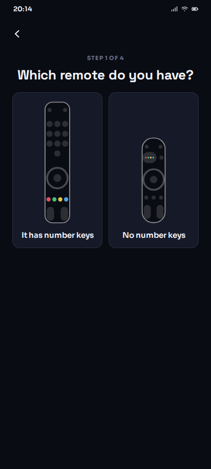
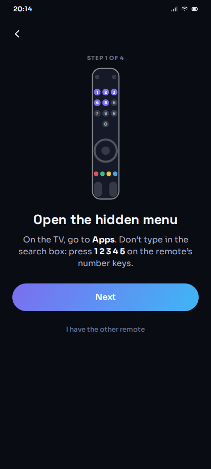
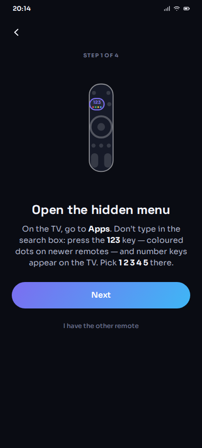
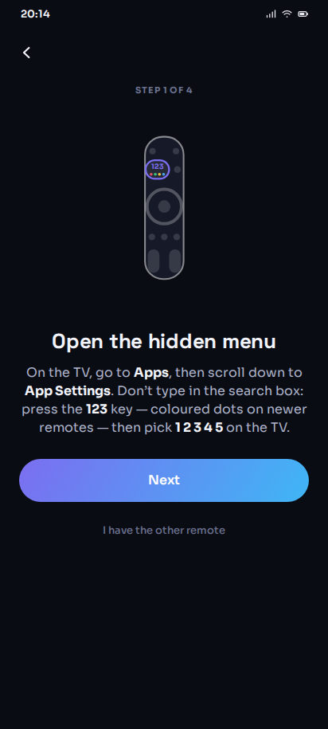
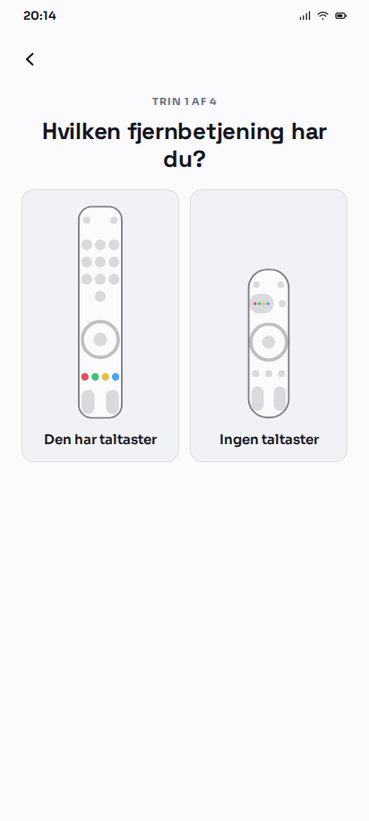
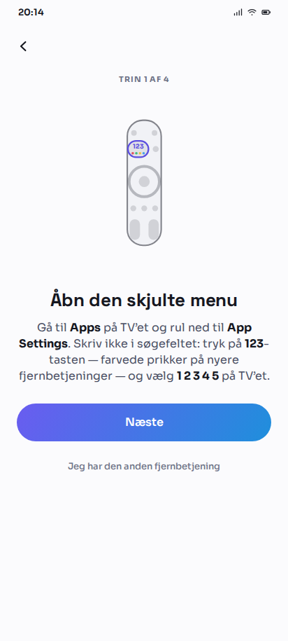
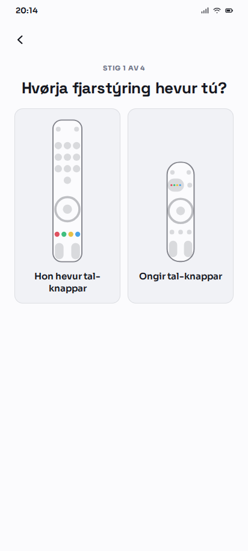
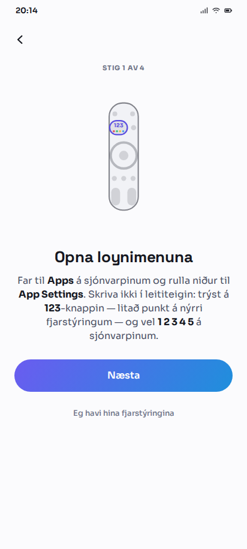
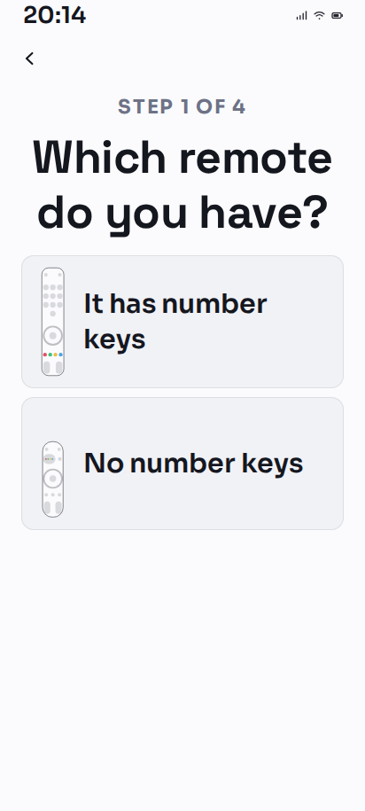
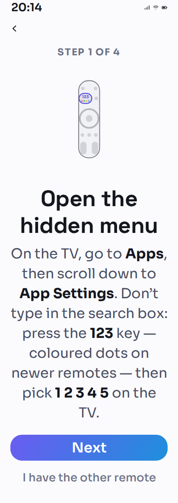
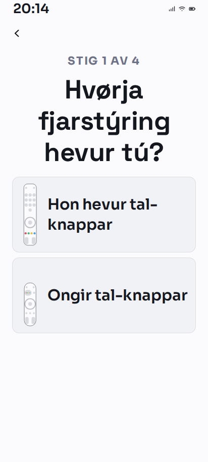
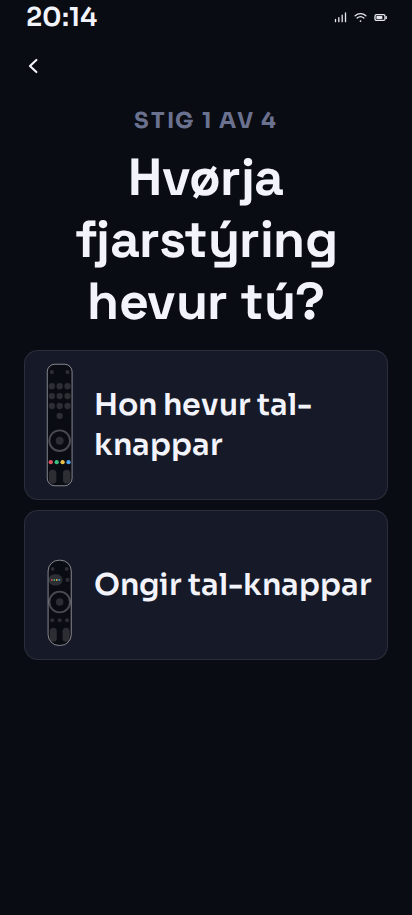
x1 is the fourth body FR-13 writes and the brief's state list does not hold —
number keys on a 2024-or-later TV. x2 is the side-by-side choice forced to
stay side by side at 200 %, which is the evidence behind A's stacking rule: in English the label
breaks mid-word, and Faroese is longer.
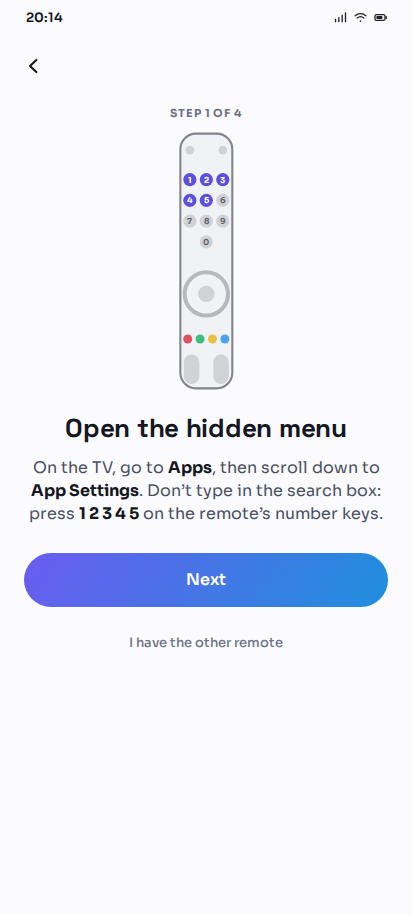
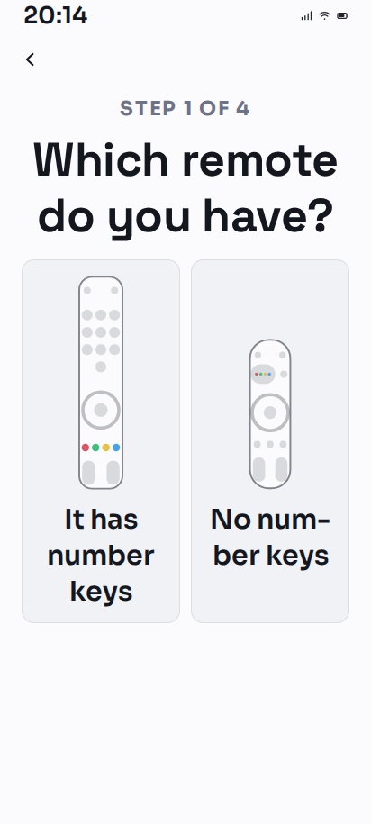
| Row | Decided | Why |
|---|---|---|
| Choice layout | Side by side at the default font, stacking to one column at 200 % | The silhouettes are the cue and a tall drawing shows a silhouette; forced side by side at 200 % the labels break mid-word (study x2) |
| The question's place | It replaces the illustration and the body, and it is the screen's H1 (A and B); C keeps the step title and makes the question a prompt | Step 1 stays one screen that changes state. Which of the two the title should be is an open row below |
| The switch link | Quiet link under the body in A and B; a segmented control in C | The guide already uses quiet links; C exists to draw the alternative rather than argue it |
| Lit keys | Accent fill on the five number keys, accent ring on the Number/Color key, no halo | A halo ring magnified into two outlines around one target and a chain across 1-2-3 |
| The five digits | No-break spaces between them, in all three languages | At 200 % press 1 2 3 4 5 broke as "1 2 3" / "4 5", which reads as two numbers rather than five keys |
| The TV on screen | Not named at all | No step of the shipped guide names the TV; the model only decides which body text the screen carries |
English source with Danish and Faroese drafts. samsungtv.step,
samsungtv.step1.title and samsungtv.next are shipped and quoted
unchanged. The two *_sub lines are direction B's only.
samsungtv.step1.body, .body_new and .hint are retired by
FR-13. The spaces inside 1 2 3 4 5 are U+00A0.
| Key | en | da | fo |
|---|---|---|---|
| step1.which | Which remote do you have? | Hvilken fjernbetjening har du? | Hvørja fjarstýring hevur tú? |
| step1.keys | It has number keys | Den har taltaster | Hon hevur tal-knappar |
| step1.nokeys | No number keys | Ingen taltaster | Ongir tal-knappar |
| step1.keys_sub (B only) | A long remote with 0–9 | Lang fjernbetjening med 0–9 | Long fjarstýring við 0–9 |
| step1.nokeys_sub (B only) | A short Smart Remote | Kort Smart Remote | Stutt Smart Remote |
| step1.keys_body | On the TV, go to **Apps**. Don’t type in the search box: press **1 2 3 4 5** on the remote’s number keys. | Gå til **Apps** på TV’et. Skriv ikke i søgefeltet: tryk **1 2 3 4 5** på fjernbetjeningens taltaster. | Far til **Apps** á sjónvarpinum. Skriva ikki í leititeigin: trýst **1 2 3 4 5** á tal-knappunum á fjarstýringini. |
| step1.keys_body_new | On the TV, go to **Apps**, then scroll down to **App Settings**. Don’t type in the search box: press **1 2 3 4 5** on the remote’s number keys. | Gå til **Apps** på TV’et og rul ned til **App Settings**. Skriv ikke i søgefeltet: tryk **1 2 3 4 5** på fjernbetjeningens taltaster. | Far til **Apps** á sjónvarpinum og rulla niður til **App Settings**. Skriva ikki í leititeigin: trýst **1 2 3 4 5** á tal-knappunum á fjarstýringini. |
| step1.nokeys_body | On the TV, go to **Apps**. Don’t type in the search box: press the **123** key — coloured dots on newer remotes — and number keys appear on the TV. Pick **1 2 3 4 5** there. | Gå til **Apps** på TV’et. Skriv ikke i søgefeltet: tryk på **123**-tasten — farvede prikker på nyere fjernbetjeninger — så kommer taltasterne frem på TV’et. Vælg **1 2 3 4 5**. | Far til **Apps** á sjónvarpinum. Skriva ikki í leititeigin: trýst á **123**-knappin — litað punkt á nýrri fjarstýringum — so koma tal-knappar fram á sjónvarpinum. Vel **1 2 3 4 5** har. |
| step1.nokeys_body_new | On the TV, go to **Apps**, then scroll down to **App Settings**. Don’t type in the search box: press the **123** key — coloured dots on newer remotes — then pick **1 2 3 4 5** on the TV. | Gå til **Apps** på TV’et og rul ned til **App Settings**. Skriv ikke i søgefeltet: tryk på **123**-tasten — farvede prikker på nyere fjernbetjeninger — og vælg **1 2 3 4 5** på TV’et. | Far til **Apps** á sjónvarpinum og rulla niður til **App Settings**. Skriva ikki í leititeigin: trýst á **123**-knappin — litað punkt á nýrri fjarstýringum — og vel **1 2 3 4 5** á sjónvarpinum. |
| step1.other | I have the other remote | Jeg har den anden fjernbetjening | Eg havi hina fjarstýringina |
123 and four coloured dots together. If the owner's own set labels it one way
only, one of the two can come off the drawing and out of the sentence.